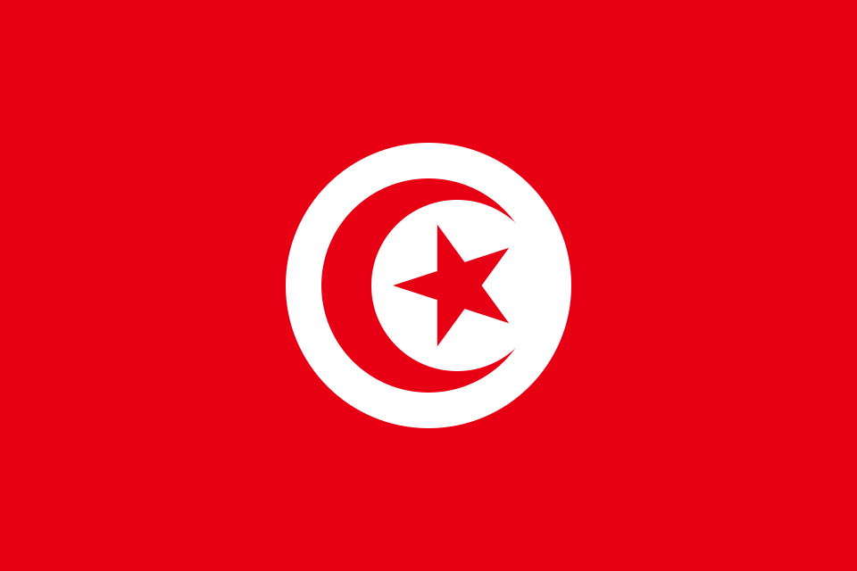
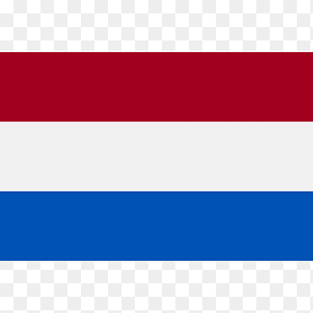
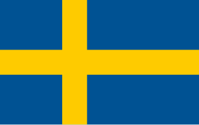

Historia
El gigante asiático en constante evolución
Japón se ha consolidado como la máxima potencia del fútbol en Asia y un rival sumamente respetado en todo el mundo. Desde su primera aparición en 1998, los Samuráis Azules no han faltado a ninguna cita mundialista, destacando por su disciplina táctica, velocidad endiablada y un juego colectivo impecable que desgasta a cualquier oponente.
En el Mundial de Qatar 2022, Japón sorprendió al planeta entero al liderar su grupo tras vencer de forma heroica a dos gigantes y campeones del mundo: Alemania y España. Aunque cayeron con honor en octavos de final ante Croacia por penales, llegan al Mundial 2026 con una generación dorada dispuesta a romper su propio techo histórico.
Estadísticas mundialistas
0
Títulos
8
Participaciones
7
Victorias
4
Octavos jugados
Partidos en Grupo F
14 jun
Japón vs Túnez

NRG Stadium
Houston
Houston
20 jun

Países Bajos vs JapónHard Rock Stadium
Miami
Miami
26 jun

Suecia vs JapónAT&T Stadium
Arlington
Arlington
Curiosidad
Ejemplo de cultura y respeto: Los aficionados japoneses son mundialmente reconocidos y aplaudidos por quedarse a limpiar minuciosamente las gradas y recoger la basura de los estadios al terminar cada partido, independientemente de si su selección ganó, empató o perdió.